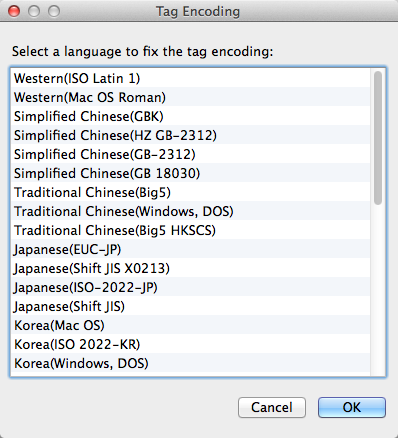
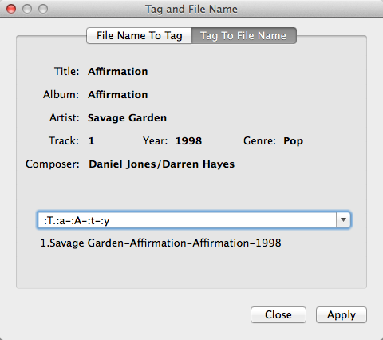

iD3 Editor is an application that facilitates tag processing of music files. It provides following features:
iD3 Editor supports MP3, APE, FLAC, OGG, OGA, SPX and WAV files.
Above is the main window of iD3 Editor. To edit tags of a group of music files, select those files, and then enter corresponding tag values using the input fields on the right side of the window.
Button "To All" allows you to apply an existing tag value to all music files, which may be useful under many situations.
Tags of many music files are not properly encoded. The result is those tags are not readable in music players. To fix those incorrectly encoded tags,

If a correct encoding has been selected, tags will be fixed automatically.

Some music files have artist, album, title and track information in their file names. For those files, instead of manually entering tag values, you can use iD3 Editor to retrieve them automatically.
Here is an example. File names in the picture above contain track numbers, artist, album name and MP3 title. To convert those them into tags:
Text :T.:a-:A-:t-:y. mentioned in step 3 tells iD3 Editor:
As you can see, :T, :a, :A, :t and :y are symbols to indicate locations of track number, artist, album, title and year in file names. Table below lists the meaning of all symbols supported by iD3 Editor:
| Symbol | Tags values to fetch |
|---|---|
| :a | artist |
| :A | album |
| :g | genre |
| :t | title |
| :T | track |
| :y | year |
| :: | : |
| :x | arbitary text |
Symbol :x can be used to indicate arbitrary text not interesting to you; :: is to indicate a single : in a file name (if any).

Similarly, you can also rename a group of music files using their tag information. To do so,
Below are two more examples:
NOTE: Renaming music files only works for music files saved under the Music folder of your home directory.